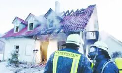

Weitere Datenübertragung Ihres Webseitenbesuchs an Google durch ein Opt-Out-Cookie stoppen - Klick!
Stop transferring your visit data to Google by a Opt-Out-Cookie - click!: Stop Google Analytics
Cookie Info. Datenschutzerklärung

 Altbau und Denkmalpflege Informationen - Startseite / Impressum
Altbau und Denkmalpflege Informationen - Startseite / Impressum
Inhaltsverzeichnis - Sitemap - über 1.500 Druckseiten unabhängige Bauinformationen +++
Fragen???
Die härtesten Bücher gegen den Klimabetrug - Kurz + deftig rezensiert +++
Bau- und Fachwerkbücher - Knapp + (teils) kritisch rezensiert
Altbauten kostengünstig sanieren:
Heiße Tipps gegen Sanierpfusch im bestimmt frechsten Baubuch aller Zeiten (PDF eBook + Druckversion)
Was moderne Bauweisen für unerfahrene Bauherren bedeuten können +++
Fertighaus - Fluch oder Segen?
Das Handwerkerquiz + Das Planerquiz für schlaue Bauherrn

 Altbautaugliche Verfahren und Baustoffe
Altbautaugliche Verfahren und Baustoffe
Wandbildner [10]
Die Kapitel 9-10 wurden in folgende Unterkapitel aufgeteilt - 9. Natursteinrestaurierung: [1] [2]
[3] [4] [5]
[6]
Steinboden: [7]
Reinigungstechnik: [8]
10. Wandbildner im Vergleich: [9] [10] [11] [12] [13] [14] [15]
10.a Fachwerk/Blockbau: [16 - Die schärfsten Tipps zur Fachwerkrestaurierung: Woran erkennst Du einen Fachwerk-Experten?]
[17] [18] [19.1] [19.2]
Bodenaufbau/Holzboden: [20]
Feuchte- und Brandverhalten sowie Radioaktivität von Baustoffen
Daß nur bewährte und deswegen auf diesen Seiten bevorzugte Baustoffe das einwandfreie "Feuchtemanagement"
beherrschen, weiß die Baukunst seit anno dunnemals. Es brauchte schon Kriegsnotzeiten
und Industrienormen (vor allem der Pappendeckelbudenproduzenten), um davon mit Hilfe gelahrter "Expertisen" williger "Bauforschung"
abzuweichen - Zum "Stand der Technik" wurden und werden diese Konstruktonsutopien - im Gegensatz zum "Allgemein anerkannten Stand
der Technik" - hochgejubelt. Der Auftragsforschung wegen, klaro. Aber: Aus Margarine wird trotzdem keine Butter, aus Schaumgespinsten,
Porenschwammblöcken, Kunststofffolien und sonstigem Verpackungsmüll kein vernünftiger Baustoff.
Haben wir das nicht schon immer gewußt? Daß der Ausweg für die abhängigen "Forscher" nun in immer aufwendigeren
Simulationen und anlagentechnischer Entlüftung und Entfeuchtung liegt, ist klar.
Wo bliebe sonst das schöne Geschäftsfeld, dem Bauherrn ein X für ein U vorzumachen, ihn mit allen Mitteln psychischer
Beeinflussungskunst vom traditionsbewährten Bauen wegzulocken? Empfehlung: Lassen Sie sich nicht türkien!
Nicht uninteressant zur Bewertung der Ersatzbaustoffe in
brandschutztechnischer Hinsicht ist diese Tabelle (Quelle: Dr.-Ing. Wolfgang J. Friedl, vfdb-Zeitschrift 9/99), sie zeigt die unterschiedliche Menge
an tödlichen Brandgasen, die im Brandfall aus verschiedenen brennbaren Stoffen freigesetzt werden, Die Schaumstoffe, zu denen ja auch Polystyrol gehört,
können da jedenfalls mit vergleichsweise sehr hohen Rauchgasmengen aufwarten:
Brandgasvolumenstrom in verschiedenen Materialien
| Material (10 kg) |
Brandgase in m3/h |
| Schaumgummi |
25.000 |
| Schaumstoff |
23.000 |
| Papier |
10.000 |
| Polypropylen |
7.000 |
| Spanplatten |
7.000 |
| GFK-Kunststoff |
5.000 |
| PVC-Kunststoff |
4.000 |
| Linoleum |
2.500 |
Wie die Ausstattung mit qualmfreudigen "Baustoffen" die Personenrettung in Einfamilien-Dämmbuden
verunmöglicht, lesen sie auf diesem Link:

Mutter
und vier Kinder starben bei Brand eines vollpolystyrolisierten EFHs in Tegernheim
Passivhäuser brennen anders
- Zum extremen Brandrisko im Passivhaus / Brandgefahr Passivhausbauweise
Eine interessante Meßwert-Tabelle zum praktischen Feuchtegehalt
findet sich auch bei Hohmann/Setzer (Auszug, ergänzt um Lehm, Holz und Stroh nach Prof. Dr.-Ing. Jörg Schulze):
| Baustoff |
Praktischer
Feuchtegehalt
in Volumenprozent
|
| Ziegel |
1,5
|
| Lehm |
3
|
| Kalksandstein |
5,0
|
| Beton, geschlossenes
Gefüge, dichte Zuschläge |
5,0
|
| Beton, geschlossenes
Gefüge, porige Zuschläge |
15,0
|
| Leichtbeton, haufwerkspor.
Gefüge, dichte Zuschläge |
5,0
|
| Leichtbeton, haufwerkspor.
Gefüge, porige Zuschläge |
4,0
|
| Gasbeton |
3,5
|
| Gips/Anhydrit |
2,0
|
| Gußasphalt |
etwa 0
|
| Holz und Stroh |
10-15
|
Frage: Was passiert in feuchten Buden? Richtig, es schimmelt, man fröstelt und wird sterbenskrank. Obendrein
steht der Feuchtegehalt auch in Beziehung zur Saugfähigkeit. Das Aufbrennen und nachfolgende Hohlstehen von
Putzschichten auf Kalksandstein ist ja diesbezüglich ein bekanntes "heißes Eisen". Erneuern oder
nachträgliches Anbinden an den Putzgrung mit Kalktechnik sind dann die Alternativen.
Auch beim Lehmbau mit Lehmgefachen, Lehmputzen und Lehmfarben sollte man schon genauer wissen,
was man tut. Feuchtetechnisch kann es hier extreme Probleme geben, wenn man die tatsächlichen Eigenschaften von
Lehm und Ton vernachlässigt und auf die auch auf diesem Sektor geradezu ungeuerlichsten Märchen von
"interessierter Seite" hereinfällt.
Deswegen hier als Info mein etwas überarbeiteter Beitrag aus dem
Fachwerkforum bei fachwerk.de - Innendämmung mit Lehm oder was?:
 So kann ein innengedämmtes Holzhaus nach ein paar
Jahren Nutzung aussehen. Dabei handelte es sich um eine kalkverputzte Heraklithverkleidung. Es kommt immer etwas
Feuchte hinter die Dämmung, und die gedämmte Wand ist halt kälter, und dann kondensiert es ein -
abhängig von der Raumluftfeuchte, die in dicht gedämmten Buden gerne höher ist. Von außen kommt
fallweise der Schlagregen dazu. Die Wand kann folglich auffeuchten, die Feuchte wird dann in der kalten Jahreszeit
nimmer richtig rausgeheizt.
So kann ein innengedämmtes Holzhaus nach ein paar
Jahren Nutzung aussehen. Dabei handelte es sich um eine kalkverputzte Heraklithverkleidung. Es kommt immer etwas
Feuchte hinter die Dämmung, und die gedämmte Wand ist halt kälter, und dann kondensiert es ein -
abhängig von der Raumluftfeuchte, die in dicht gedämmten Buden gerne höher ist. Von außen kommt
fallweise der Schlagregen dazu. Die Wand kann folglich auffeuchten, die Feuchte wird dann in der kalten Jahreszeit
nimmer richtig rausgeheizt.
Eine zusätzliche Lehmschale halte ich für ebenso falsch. Wichtig ist doch, daß die Fachwerkwand in der
Heizperiode genug Wärme bekommt, um eben ausreichend auszutrocknen. Und genau dem steht jegliche Art von
Innendämmung entgegen.
Wichtig: Richtig (!) heizen und lüften, also stetig und nicht ständig
rauf und runter bzw. unsinnige Stoßlüfterei. Dann bleibt auch der Energieverbrauch niedrig.
Und: Ein funktionierendes System wie die historisch bewährte Fachwerkwand bitte nicht zu Tode dämmen, egal
ob industriemäßig mit Schaum/Gespinst, mit mondscheingestampftem ÖKO-Leichtlehm oder handgezupft-
pobedrückten BIO-Haschischplatten. Nebenbei stehen die Dämm-Kosten nie in einem
akzeptablen Verhältnis zu den (theoretischen) Einspareffekten - das sage ich als EnEV-Sachverständiger,
der ständig - streng nach EnEV, versteht sich - Wirtschaftlichkeitsberechnungen betr.
EnEV-Befreiung vornimmt.
Wenn es mal dauerhaft keine Schäden durch Fachwerk-Innendämmung geben sollte, ich will das ja nicht
abstreiten, liegt das
- an der dank guter Dauerlüftung ausreichend trockenen Raumluft,
- an fehlender Bewitterung der Wand von außen, bzw.
- Dauerbetrieb einer Hüllflächentemperierung.
Doch damit wird die Innendämmung noch lange nicht wirtschaftlich. Und bleibt ein Risiko, wenn die genannten
Voraussetzungen irgendwann mal nicht mehr funktionieren, sei es durch Leerstand oder sonstige bauliche
Änderungen.
Selbstverständlich macht es bei vorhandener Innendämmung Sinn, die Feuchte darin zu messen. Noch mehr Sinn
machte es, anhand einer Freilegung an einer kritischen Partie wie Außenwandecke sich die Sache mal genauer
anzusehen.
Und ansonsten wette ich, daß der historische Oberputz ein Luftkalkmörtel war, auf welchem Gefachaufbau auch
immer (Ziegel, Bims, Lehm). Und genau das würde ich ggf. wieder so machen, denn er kann im Unterschied zum
Dichtbaustoff Lehm (ideal für Fundament- und Teichabdichtung) wirklich Raumluftfeuchtespitzen puffern und bestens
wieder abtrocknen.
Und die Biodämmstoffe sind in Bezug auf Schimmel keineswegs besser als Industrieware: Sie halten Feuchte
gräßlich zurück mangels Kapillarsystem - vergleichbar Mineralwollfilz oder machen dicht wie z.B. Lehm.
Wenn nun Feuchte da ist, schimmelt's eben. Und Holz rottet dann. Habe selbst in diesem Forum schon irgendwo
Schimmel auf Bio gesehen, und zwar nicht nur in meinen Bildern ...
Jeder kann selbst zum Baustoffprüfer werden: Probieren Sie doch mal die Feuchteaufnahme und -abgabe eines
Lehmputzes mit dem eines Luftkalkmörtels zu vergleichen. Das kann man auf einer Küchenwaage machen, mit der
Küchenuhr als Zeitmesser. Und dann wird der Unterschied klar.
Davon abgesehen ist mir kein Beispiel bekannt, wo sich die gar nicht mal so geringen Kosten einer Leichtlehmzusatzschale durch damit
erzielbare Energieeinsparungen wirtschaftlich gegenrechnen würden.
Freilich haben dickere Wände besseren Schallschutz. Doch die heizungsbedingte Austrocknung der winterlich
beregneten Fachwerkwand wird dann ein Problem. Warum nicht die Erfahrung unserer Vorväter nutzen? Die Meister des
Fachwerkbaus haben auf derlei Späßchen verzichtet - aus Armut oder Blödheit oder weil eh der Knecht
das Holz gehackt und verschürt hat?
Wenn der Lehm ins Fachwerkgefache eingebaut ist, ist er bedeutend nasser als das Holz.
Folge: Das trockenere Holz nimmt Feuchte an und - quillt.
Dann kommt die Trocknungsphase:
1. Das Holz schwindet.
2. Der Lehm schwindet.
Folge: Eine zwischen Lehm und Holz klaffende Fuge. Diese ist kapillar aktiv und kann bei Beregnung Unmengen Wasser
reinsaugen. Das nimmt nun aber nicht der (dichtere) Lehm auf, sondern vorzugsweise das Holz.
So kann es zu Überfeuchten im Holz kommen, abhängig von der Bewitterungssituation. Deswegen haben die alten
Meister bzw. die geschädigten Hausbesitzer die stark bewitterten Fachwerkfassaden entweder gleich oder nach
Schadenseintritt durch entsprechende Schutzkonstruktionen (Dachvorsprung, Abweisbrettgesimse, Vollverkleidung mit
Vorsatzschale) geschützt. Wenn der Lehm irgendwelche Holztrocknungseigenschaften und nicht diese vermaledeite
Neigung zur schwundbedingten Fugenbildung gehabt hätte, wäre das natürlich nicht notwendig gewesen.
Auch wenn man die zunächst entstehende Fuge nachverdichtet - mit nassem Lehm - bleibt der Quell- und Schwundeffekt, die Kapillarwirkung
der Fuge steigt mit geringerer Fugenbreite.
Natürlich ist die Fuge auch bei allen anderen Mörteln existent, profimäßig macht ja man extra
einen Kellenschnitt als "Bewegungsfuge". Nur trocknen Kalkmörtel selber weitaus schneller und besser als Lehm.
Was dann bei Beregnung übrigens noch dazukommt:
Kalkmörtel entlastet die Fuge am Schwellholz/unterem Rähm um Weltklassen besser, da er von vornherein in seiner
Fläche mehr Wasser "kurzfristig" wegsaugt - um es baldigst wieder abzugeben. Es sei denn, ein Heini hat das Gefach
mit wasserabweisenden Farben nach Künzelscher Fassadentheorie zugepappt.
Freilich, auch Holz ist nicht der Renner betr. Feuchteaufnahme und -abgabe. Und ist deswegen ein bewährtes und
auch dichtes Dachmaterial (Schindel). Aber das steht hier nicht zur Diskussion.
Wissen sollte man nur betr. Innendämmung, daß Holzweichfaserplatten bedeutend mehr Kondensat (und selbstverständlich
auch Wasser) reinsaugen (Meßwerte an die 30 % in WDVS-Wanddaämmplatten und Dachdämmungen sind kein Ding der
Unmöglichkeit!), als Massivholz, und mangels Kapillarität dann äußerst lange zurückhalten können. Deswegen schimmelt
das Zeugs ja auch nicht schlecht, sobald die Umgebungskonditionen passen. Nicht umsonst werden den seltsamen Putzen
für den Einsatz auf Holzweichfaserplatten ausreichende Mengen giftiger Fungizide beigesetzt. Nebenbei werden
"moderne" Holzweichfaserplatten auch gerne mit Kunstharzleimen und Kunststoff-Stützfasern versehen, die für manchen
überzeugten Ökohengst deren so arg gepriesenen ökologischen Vorteile etwas in Mitleidenschaft ziehen und im
Entsorgungsfall höhere Kosten verursachen (keine Kompostierbarkeit). Hier etwas Zusatzinfo zum Problemmüll
"Ökodämmung" von Holzweichfaser über Hanf und Flachs bis zur Schafwolle und sonstigen künstlichen Dämmstoffen:
AID-Info zu nachwachsenden Dämmstoffen
Kompetenzzentrum Bauen mit nachwachsenden Rohstoffen - Inhaltsstoffe von Dämmmaterialien
Und zweitens:
Die frühere Lehmbauerei hatte Zeit. Die brauchte der Lehm unbedingt zum ordentlichen Durchtrocknen der eingebauten
Lagen. Heutzutage fehlt es nicht an teurem Lehmpamp, sondern an Zeit. Und so geht eben so einiges beim Lehmbau schief.
Kommt nun die typische Innenkondensation durch überfeuchtes Energiespar-Raumklima zustande, ist die äußere
raumseitige Zone des Lehms ein Problem. Seine organganischen Zuschlagsstoffe und die typischen Methylzelluloseanstriche
/ Bioanstriche sind perfektes Substrat für den Schimmelbefall. Und seine vergleichsweise dichte Struktur saugt
eben nicht das ankommende Kondensat schnell weg, wie es ein Kalkmörtel im Vergleichsfall könnte. Das
dürfte inzwischen klar sein, daß es ein bedeutendes Schimmelrisiko bei Lehmputzen gibt.
Was mich befremdet, ist das Propagieren der Lehmerei ohne ausreichendes Risikobewußtsein und Beachtung der
Reaktionen der beteiligten Konstruktionen bei Feuchte. Märchen wie unübertreffbare Feuchtepufferung (sehen
wir mal von der schnell erreichten Auffeuchtung der Oberzone und extrem sandhaltigen/abgemagerten Mischungen ab),
Rauchverzehrung und Holzaustrocknung / Trockenhaltung durch Lehm sollten wir uns als Fachleute sparen.
Lehmbau - gegen den ich freilich garnix habe, setzt eben wie alle anderen Bauweisen konstruktive Kenntnisse voraus, um Material und
Verarbeitung sowie den späteren Gebrauch in den Griff zu bekommen.
Einwand eines Forumsteilnehmers:
Nach einem Versuch des FEB. Uni Kassel (Prof. Gernot Minke) kann dieser bis zu 300 g Wasser aus der Raumluft pro m²
innerhalb 48 Stunden aufnehmen. Zum Vergleich: Gebrannte Ziegel liegen hier bei 10-30 g "andere" Putze lagen
zwischen 26-76 g.
Antwort: Was die Wissenschaft betrifft, muß man immer fragen, wer sie finanziert bzw. veranlaßt. Haben Sie eine
zuverlässige Tabelle der Desorptionsfähigkeiten von Lehm und Kalkmörtel im Vergleich? Das könnte die anstehende
Frage im Sinne von "Wissenschaft" beantworten.
Die zitierte Laborforschung liegt mir inkl. der den Versuchsaufbau bestimmenden Randbedingungen nicht vor. Vorstellen
könnte ich mir schon, daß unheimliche Mengen Raumluftkondensat auf einer kalten Lehmschicht in der obersten
Zone niederklatschen und dann deren Feuchtegehalt massiv erhöhen, bis es von der Wand rinnt.
Nebenbei ist die Feuchtebeaufschlagung einer Konstruktion vorwiegend abhängig vom Verhältnis
Raumluftfeuchte-Lufttemperatur-Oberflächentemperatur. Und der Anstieg der Oberflächentemperatur eines Raumes
ist beim Aufheizvorgang mit Heizluft von der Materialdichte (Rohdichte).
Ein schwerer Baustoff wie Lehm wird also viel langsamer erwärmt als ein leichter Porenziegel oder gar ein
Dämmstoff. Bleibt also zunächst wesentlich kälter und verschlingt unter Laborbedingungen gegen eine
kaltbleibende Außenluft (Klimakammer) auch mehr Nachheizbedarf, um seine Oberflächentemperatur zu halten.
Womit wir bei den möglichen Parametern wären, die bei einem Absorptionsversuch von Kondensat in
Raumoberflächen zu beachten sind, neben so einigen weiteren. Beim Versuchsaufbau kommt es eben genau darauf an,
wenn man faire Vergleichsuntersuchungen machen will.
Ansonsten ist es die leichteste aller Übungen, durch geeignete Versuchsaufbauten so gut wie jedes gewünschte
Versuchsergebnis vorzuprogrammieren.
Aber die Transportleistung des Kalkmörtels, der Kondensat ins Innere wegtransportiert, es nicht an der Oberfläche schimmelriskant
anreichert und danach ohne Anstrengung schnell wieder abgibt, KANN Lehmputz niemals erreichen. Na gut, im
Mischungsverhältnis Sand/Lehm = 99/1 schon, aber das ist Illusion.
Wenn Sie mal die Pettenkofermethode anwenden und Baustoffe "durchpusten", werden Sie schnell selber herausfinden,
welches Material für Diffusion und auch Feuchte um Weltklassen durchströmbarer ist. Meine unwissenschaftliche Prognose:
Lehm kann nur der zweite Sieger sein.
Oft muß man sich auf den begrenzten Verstand und die Erfahrung und nicht auf die Auftragswissenschaft verlassen.
Das wäre ja auch eine Methode. Und vielleicht nicht die schlechteste.
Ich zitiere auszugsweise aus einer Abdichtanleitung für Teichbau:
"Es gibt prinzipiell mehrere Möglichkeiten einer Teichabdichtung mit Lehm. ...:
1. Stampflehmabdichtung
Fetter Lehm (mindestens 30% Tonanteil) wird in erdfeuchter, krümeliger Konsistenz in einer Schichtstärke von 15-18 cm auf dem
Teichboden aufgebracht und festgestampft. ...
2. ... Verlegen von ungebrannten Lehmsteinen - sogenannten Grünlingen.
Am besten verwendet man hier das Doppelformat mit 12x12x25 cm. Die Fugen zwischen den Steinen sollten möglichst klein sein und
werden ebenfalls mit krümeligem Lehm verfüllt. Sie können aber auch mit einer Lehmschlämme, die Sie
sich aus den aufgeweichten Grünlingen herstellen, zugegossen oder zugestrichen werden. Anschließend wird die
Lehmoberfläche mit Wasser besprüht, sodaß die Lehmsteine noch etwas aufquellen können und sich
eventuelle Fugen noch schließen. ...
3. Am einfachsten ist es, Fertigteil-Lehmelemente zu verlegen oder die Abdichtung mit tonhaltigen Vliesen
..."
Soviel zum profimäßigen Dichten mit Lehm&Ton. Reimt sich doch geradzu unheimlich gut mit meinen obigen Aussagen zusammen - oder?
Hier der Link zur Quelle: Forum nawaro.com: Christian A. Rauch: Teichabdichtung mit Lehm
Interessant auch der Belastungsgrad des Innenraums durch das Radonnukleid Rn-222, das baupraktisch den
größten Strahlungseinfluß durch seine lungengängige "Darbietungsform" aus der Baustoffexhalation darstellt:
Radioaktivität von Baustoffen
| B a u s t o f f |
Exhalationsrate
für 10 cm Dicke
in Bq/m2h
|
Quelle |
| Ziegel, Klinker |
0,2 |
4 |
Leichtbetonsteine
aus |
|
|
|
|
0,4 |
2 |
|
|
0,9 |
1 |
|
|
1,8 |
2 |
| Naturgips |
0,4 |
3,1 |
Industriegips
aus |
|
|
|
|
0,4 |
3,1 |
|
|
24,1 |
1 |
| Kalksandstein |
0,6 |
2 |
| Beton |
0,7 |
2 |
| Porenbeton |
1,1 |
3,1 |
| empf. Grenzwert |
</= 5 |
|
Quellennachweis:
1) Keller, Gert: Einfluß der natürlichen Radioaktivität, arcus Heft 5, 1984.
2) Prüfbericht des Boris-Rajewski-Instituts für Biophysik der Universität des Saarlandes.
3) Der Bundesminister des Inneren: Umweltradioaktivität und Strahlenbelastung. Jahresbericht 1982.
4) Meßwerte 1987 u. 1990 gem. Prüfberichten des Boris-Rajewski-Instituts für Biophysik.
Die ibau-Planungsinformationen schreiben am 15.9.00 zum Problem rund um
Radon (das Isotop 222Rn der Uran-Zerfallsreihe) in
superschadstoffeinsperrenden dichten Dämmbuden:
"Krebsrisiko durch Wärmedämmung
München (vwd/AP) - Die Wärmedämmung von Häusern kann das Krebsrisiko der Bewohner erhöhen. Der stellvertretende
Generaldirektor der Internationalen Atomenergiebehörde, Werner Burkart, sagte bei einer Konferenz über den Schutz vor natürlicher
Strahlung in München: "Brisant ist die Art, wie wir unsere Häuser nach außen abdichten, um weniger Wärmeverluste zu haben."
Mit der Abdichtung steige nämlich die natürliche Strahlenbelastung durch das radioaktive Edelgas Radon, das im Erdreich [Anm.
KF: Und in den o.g. Baustoffen!] entstehe.
Wie Hans Landfermann vom Bundesumweltministerium erklärte, steigt die Lungenkrebsrate ab einer Belastung von
250 Becquerel pro Kubikmeter Luft messbar an. ... Burkart sagte, schwedischen (allerdings umstrittenen) Studien zufolge verursache
Radon in Häusern 10 bis 15 Prozent der Lungenkrebs-Toten. ... Landfermann räumte ein, dass die von der Bundesregierung geplante
Förderung der Wärmedämmung bei Altbauten mit dem Strahlenschutz "etwas konkurriert". Allerdings werde geprüft, wie eine Steigerung
der Radon-Belastung vermieden werden könne. ..."
Vielleicht durch endgültiges staatliches Verbot gängiger Massivbaustoffe? Das würde die Dämmstofffritzen aber sehr freuen! Alles
nur eine Frage des Preises für die käuflichen Besucher der Lobby.
Ausgangspunkt der die German Angst nach besten Kräften instrumentalisierenden Meldungen über unerträgliche / riskante /
gesundheitsbedrohende / tödliche Strahlung aus dem Keller bzw. Baustoffen ist immer wieder das Helmholtz Zentrum München
- Deutsches Forschungszentrum für Gesundheit und Umwelt (Neuherberg / Oberschleißheim). mit seinen diversen Instituten, z.B.
für Gesundheitsökonomie, Epidemologie und eben auch das
ISS, Institut für
Strahlenschutz. Der frühere Boß des letzteren, Prof. Wolfgang Jacobi, hatte ein besonders schönes Steckenpferd: Die
Radonforschung. Mit exzellenten Medienkontakten - vorzugsweise in die Sudelpresse (SPIEGEL usw., die obige IBAU-Meldung ist auch ein
Kind dieses Marketinggags) - gelang es ihm, sein Forschungsgebiet in der öffentlichen Angst fest zu verankern und öffentliche
Fördermittel in rauen Mengen einzuheimsen. Immer wieder machten dafür entsprechende Katastrophenmeldungen die Runde und versetzten
den deutschen Kellerbesitzer in Strahlenpanik.
Beispiel gefällig? Bittschän: Radon: Ritzen verstopft. Wissenschaftler
warnen vor dem Edelgas Radon, der "Radioaktivität aus dem Untergrund" - einer vernachlässigten Gefahr. (Der Spiegel 21.01.1991),
oder auch
Verseuchte
Häuser - Strahlenschutzbehörde warnt vor Krebsgefahr durch Radon. Von Heike Le Ker (Der Spiegel 20.08.2008)
Das Zitieren dubiosester "Studien" - eine von den staatlich instrumentierten gesellschaftszerstörenden - aber geschäftstüchtigen
Umweltaktivisten schon seit langem entdecktes und oft benutztes Instrument, mit käuflichen Wissenschaftlern die käufliche
Medienlandschaft aufzuwühlen und das deutsche Michelhirn zu kneten - beförderte freilich nicht nur die drittmittelfinanzierte
Strahlenforschung, unterhielt einen sauteuren Gerätepark, sondern auch das lukrative Geschäft mit der Angst. Krebsangstbesessene
Hausbesitzer können ja was dagegen tun, daß in ihrem gefährlichen Hüttchen die ach so tödliche Radonexhalation abgemindert wird:
Ob man das Haus gleich abreißt und einen flotten Ersatzneubau für 1,2 Millionen Euro - zugemüllt mit eklen Dämmstoffen - in die
Gegend stellt, wie es 2012 die Bayerischen Staatsforsten mit ihrem Forstamt im oberfränkischen Fichtelberg praktizierten (ja, wir
wissen es, Geld spielt da keine Rolle, es ist ja nicht das eigene), oder ob man den Keller mit wunderbarherrlichsten Kunstharzpampen
hermetisch versiegelt und abdichtet, ob man in jedes Eck einen Dosimeter installiert oder sich eine großzügige Lüftungsanlage /
Zwangslüftung mit herrlichsten Keimschleudereigenschaften anschafft, der Phantasie des verängstigten Bauherren sind die Grenzen ja
nur im eigenen Geldbeutel gesetzt. Günstiger und umweltschützender wäre es freilich, sich und die Seinen gleich ohne weitere
Umschweife umzubringen. Das würde auch dem scheußlichen Bevölkerungswachstum aus globaler Sicht sehr guttun. Und führt sicher direkt
in den Ökohimmel.
Da wir heute als moderne Menschen aufgeklärt-gottlos sind und darauf auch noch stolz, sind jedweden depressiven Panikattacken,
Verzagtheiten und psychotischen Traumatisierung nun wirklich keine Grenzen mehr gesetzt. Na denn Prost! Oder Schoko? Oder gleich
beides? Na klar, eine Schnapspraline!
Oder vielleicht zur Radonkur in den
Radon-Heilstollen nach Bad Steben? Ob sich der Arafat da heimlicherweise zu lange aufgehalten hat? Er soll ja von dem obersten
Staatsführer Israels, einem gewissen Ariel Sharon/Scheinermann, nach den bewährten Methoden demokratischer Regimes mit dem
schwer nachweisbaren (wenn man nicht grad zufällig danach sucht) Radon-Zerfallsprodukt Polonium umgebracht worden sein, wenn wir dem
israelischen Friedenskämpfer Uri Avneri und seinen Quellen
trauen dürfen. Oder wieder mal über den Atlantik fliegen, oder in die Berge, die Täler, die Meere, die Wüsten? Ach, auch der
radioaktiven Belastung - übrigens ein ganz natürlicher Prozeß, dem sogar gesundheitsfördernde Wirkung nachgesagt wird (ganz klar, von
den daran verdienenden Profis) - sind ja keine Grenzen gesetzt. Was hat sich der schöpferische Zufallsgenerator dabei nur gedacht?
Ts, ts!
Um das Strahlengeschäft neuerlich wieder mal kräftig anzuheizen, hat nun das ISS am Helmholtz Zentrum keine Kosten und Mühen gescheut
und seine
ForscherInnen
sogar bis China und Indien geschickt, um neue Verdächtige auszumachen. Und hat sie gefunden: Lehmhäuser, die
Thoron - ebenfalls ein radioaktives Isotop, diesmal
220Rn der Uran-Zerfallsreihe - ausstrahlen. Das zerfällt zwar dank kurzer Halbwertszeit ganz schnell vor sich hin, doch
egal. Hauptsache, Spiegel Online berichtet (18.04.2012):
"Radioaktivität
- Forscher warnen vor Strahlung in Lehmhäusern." Von Holger Dambeck.
Und Deutschland erstarrt wie immer vor Schrecken. Die Strahlenforschung geht weiter. Dem Spiegel sei Dank. Besonders lustig: Jetzt
trifft es all die Lehmbaunostalgiker. Sogar in einer alten Fachwerkhütte im Bamberger Umland wurden Thoronexhalationen gefunden.
Besser konnte es nicht sein. Jetzt lauert der Tod in jeder Biohütte. Statt daß man sich den wirklich unangenehmen Eigenschaften des
Lehms in Richtung Feuchte und Schimmelpilz widmet, tun sich dem deutschen Baubiologen wieder mal ein herrlicher Nebenkriegsschauplatz
auf. Ob nicht auch ein bisserl Elektrosmog aus der Strahlung kommt? Viel Spaß! Und wie war das eigentlich mit dem Krebs, kommt der
nicht aus Beziehungsstörungen und psychischem Druck? Ach nee, es muß für den aufgeklärten Menschen ja immer eine materialistische
Ursache haben, gegen Gottlosigkeit helfen ja Tabletten. Heilige Sanct Simplicitas, bitt für uns!
In Schweden, die den Deutschen in Ängsten bestimmt an nichts nachstehen, wurden angeblich schon 35000 Häuser radonsaniert, in den
nicht minder verblödeten USA wären Häuser ohne "Radonpaß" inzwischen unverkäuflich. Quelle solcher Panikmeldungen:
Heinrich Rösl,
Präsident des Bundesverbands Deutscher Siedler und Eigenheimer - der seinen 80000 Mitgliedern alleine in Bayern - bundesweit 120000 -
einen verbilligten
Dosimeter verkaufen will. Weil - siehe diesbezügliche Holcausterei im Presselink - schreckliches Gas in den Keller ahnungsloser
Hausbesitzer dringt. So Journalist Joachim Dankbar, dem Herr Rösl/Bösl für solches Marketing bestimmt dankbar sein kann. Ein Schelm,
der Böses dabei denkt ... ;-)
Übrigens: Die Strahlungsdosis in Sievert Sv (früher Rem = 10 mSv) ergibt
sich aus der Strahlungsaktivität eines Stoffes, also dem Zerfall von Atomkernen je Sekunde, gemessen in
Becquerel. Die Aktivität je Kubikmeter Raumluft Bq/m³ führt dann zu
Belastungswerten, die mit recht undurchsichtigen Grenzwerten
kräftig problematisiert werden. Diffuse Befürchtungen und unbeweisbare Besorgnisse aller Art werden da sehr "seriös" unter dem
wohlfeilen Deckmantel eines immer mehr ins Kraut schießenden Expertentums ins Feld geführt - doch: Nix Genaues weiß man eben
NICHT! Ein herrliches Betätigungsfeld also für Nachwuchswissenschaftler, alte und neue Geschäftsfelder und Ablenkungsmanöver aller
Art. Denn die massenweise Gefährdung des deutschen Hauses und Geldbeutels durch normgerechtes und gesetzlich vorgeschriebenes Bauen
bleibt dabei außen vor. Und so soll es ja offenbar auch sein.
Weiter: [Wandbildner Kapitel 11]
Das meinen die Anderen:
Grundlagenwissen und Nachschlagewerke Bau: Bauentwurf / Baustofflehre / Baustoffkunde / Bautabellen / Baustoffkenntnis / Baustoffeigenschaften / Bauphysik / Bauchemie / Alles zu Baustoffen:
Natursteinliteratur / Bücher über Naturstein-Restaurierung / Naturstein-Instandsetzung:
Fachwerkliteratur / Bücher über Fachwerkrestaurierung / Fachwerkinstandsetzung / Fachwerkreparatur / Fachwerkbau / Fachwerkhaus / Fachwerkgefüge (hier rezensiert):
Altbau und Denkmalpflege Informationen Startseite
Fragen???